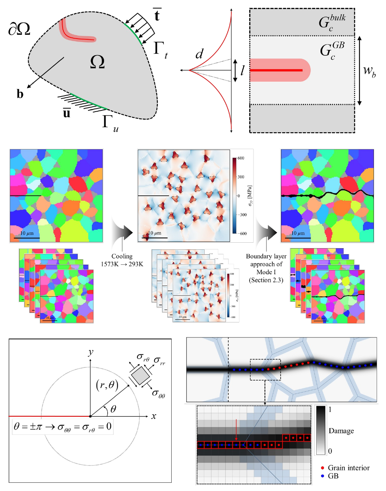
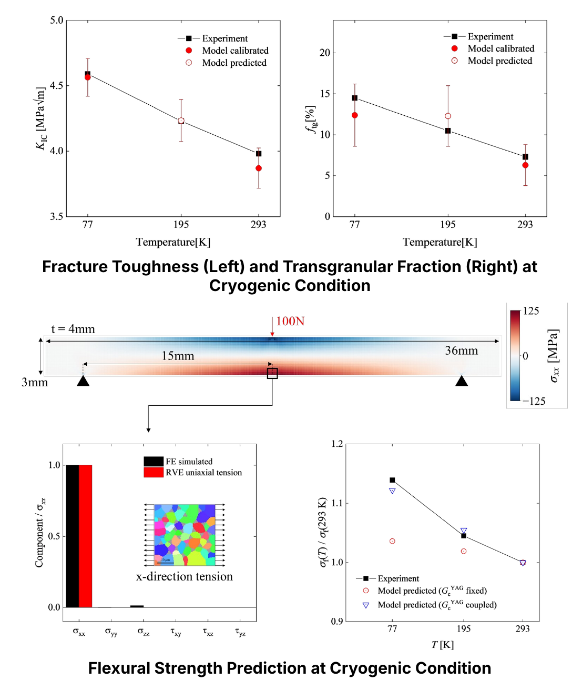

A polycrystalline phase-field fracture model for AlN ceramics that quantifies the mechanisms behind cryogenic toughening.
Yttria-sintered polycrystalline AlN becomes tougher when cooled from 293 K to 77 K. Fracture toughness rises by about 15%, flexural strength by about 14%, and the transgranular fracture fraction nearly doubles. This has usually been attributed to thermal residual stress from the expansion mismatch between AlN grains and the YAG grain-boundary phase, but that explanation had not been tested with a microstructure-based fracture model.
Cooling changes the residual stress field and the fracture resistance of each constituent at the same time, so experiments alone cannot separate them. Can residual stress alone explain the toughness increase and the shift to transgranular fracture? If not, how much must the bulk fracture energy, the grain-boundary toughness and the YAG fracture energy change?
Molecular dynamics is combined with microstructure-based phase-field fracture modeling in Abaqus. The model resolves anisotropic AlN grains, grain boundaries and YAG pockets with temperature-dependent residual stress. Bulk fracture energy and the grain-boundary toughness ratio are calibrated inversely from measured toughness and transgranular fraction, and MD crack simulations give the temperature dependence of the YAG fracture energy. Data at 195 K were withheld for blind validation.


Thermal residual stress accounts for only 6.6% of the toughness increase from 293 K to 77 K and has a negligible effect on the crack path. Matching the experiments requires a 25% increase in bulk fracture energy and a 17% increase in the grain-boundary toughness ratio. The calibrated model predicts the withheld 195 K toughness within 0.1%, and MD shows a 22% increase in YAG fracture energy at 77 K.